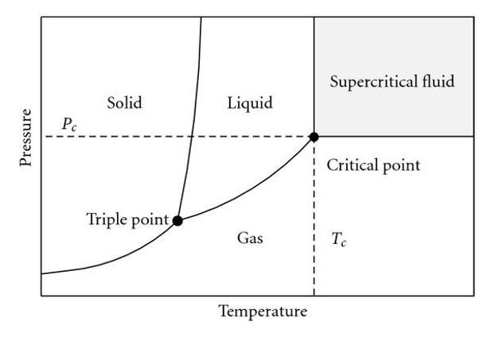
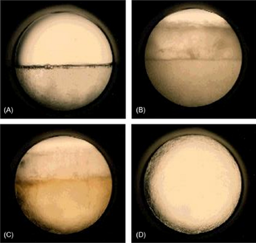

Supercritical fluids¶
Mater may exist in three well-defined physical states: solid, liquid and vapor. Additionally one may consider the supercritical state, which corresponds to the region of a pressure-temperature equilibrium diagram where the fluid is simultaneously above its critical pressure and critical temperature (see figure below). When a fluid is in the supercritical state it is commonly referred to as a supercritical fluid (SCF). The critical pressure and critical temperature are characteristic of each substance and, in the case of carbon dioxide, they correspond to 73.8 bar and 31.1 °C.

The scientific and industrial interest in supercritical fluids comes from their distinct behaviour, since they combine the best properties associated with liquids and gases/vapors. For instance, as shown in the table, supercritical fluids exhibit:
1) high diffusivities, close to typical values of gases/vapors, which favor mass transfer velocity;
2) low viscosities, close to those of gases/vapors, which result in lower pressure drops and higher convective mass transfer;
3) null surface tension like gases/vapors, which allows their easy penetration into porous materials; and
4) high densities, close to those of liquids, which increase their solvent power.
For these reasons, supercritical fluids have been increasingly applied in extraction, chromatography, and chemical reaction processes.
| Physical property | Vapor/Gas (\(T_\text{amb}\)) | Supercritical Fluid | Liquid |
|---|---|---|---|
| Density (\(\text{g}/\text{cm}^3\)) | \(10^{-3}\) | $0.1 - 1 $ | \(1\) |
| Viscosity (\(\text{Pa s}\)) | \(10^{-5}\) | \(10^4 - 10^5\) | \(10^{-3}\) |
| Diffusivity (\(\text{cm}^2/\text{s}\)) | \(10^{-1}\) | \(10^{-3}\) | \(10^{-5} - 10^{-6}\) |
| Superficial tension (\(\text{dyn}/\text{cm}\)) | \(-\) | \(-\) | \(20 - 50\) |
The most widely applied and studied supercritical fluid is carbon dioxide, mainly because it is inert, non-toxic, non-flammable, non-explosive, and possesses an easy to reach critical point at 73.8 bar and 31.1 °C.
The properties of supercritical fluids can be significantly modified by manipulating temperature and pressure, as well as by incorporating low contents (e.g., 1-5 %) of other solvents in the mixture, which are called cosolvents or modifiers. The table below list common supercritical fluids along with their critical points and main characteristics.
| Fluid | Chemical Formula | Critical Temperature (°C) | Critical Pressure (bar) | Main characteristics |
|---|---|---|---|---|
| Carbon dioxide | CO₂ | 31.1 | 73.8 | Non-flammable, low toxicity |
| Water | H₂O | 374.0 | 220.6 | Corrosive |
| Ethane | C₂H₆ | 32.2 | 48.7 | Flammable |
| Propane | C₃H₈ | 96.7 | 42.5 | Highly flammable |
| Methanol | CH₃OH | 240.9 | 80.9 | Flammable |
| Ethanol | C₂H₅OH | 240.8 | 61.4 | Flammable, moderately toxic |
| Toluene | C₇H₈ | 318.6 | 41.1 | Highly flammable |
| Ammonia | NH₃ | 132.4 | 113.3 | Flammable, toxic, corrosive |
| Nitrous oxide | N₂O | 36.4 | 72.5 | Enhances combustion of other substances |
| Sulfur hexafluoride | SF₆ | 45.6 | 37.6 | Potent greenhouse gas |
| Xenon | Xe | 16.6 | 58.4 | Inert noble gas, non-flammable |
